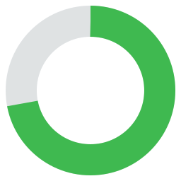
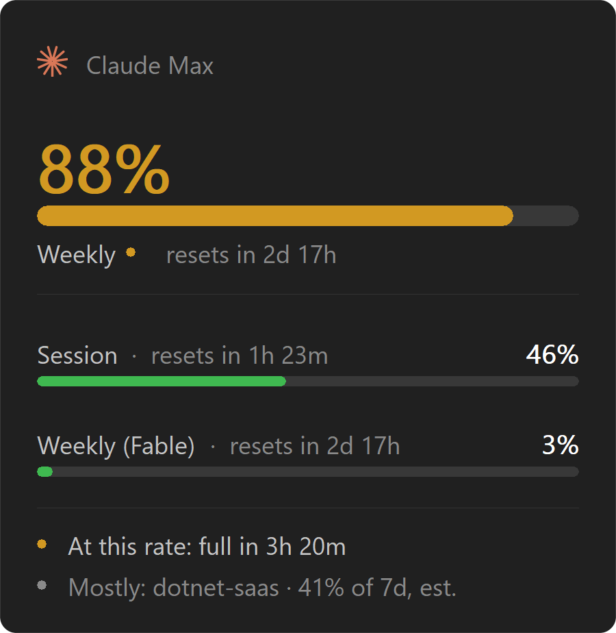
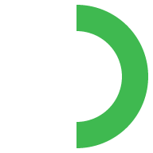
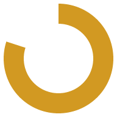
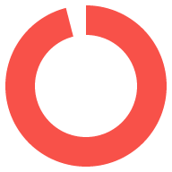

Your Claude usage limits, in the tray
or winget install kidchenko.Cota · choco install cota
Apple silicon · unsigned, so the first launch is right-click → Open
Windows 10 or later · x64 · free and open source
All releases — portable build, checksums, notes
macOS 11 or later · Apple silicon · free and open source
All releases — checksums, notes

Claude Code will tell you your limits when you ask it — /usage,
in a session you already have open. Cota is the same numbers when you
didn't ask.
A ring sits in the tray — the macOS menu bar or the Windows notification area — and fills as your fullest limit does. It goes amber at 75% and red at 90%, so "I have two days of weekly left" is something you know rather than something you check — and finding out you are nearly out stops being something that happens halfway through a refactor.

50% Plenty left
80% Be careful
96% Wrap upActual size in the tray: 16 pixels on Windows, a touch larger in the macOS menu bar. These are the same ring, drawn larger here by the same code.
Cota reads the OAuth token Claude Code already stores on your machine and
sends it to api.anthropic.com — the service that issued it. That
is the only host it ever contacts. There is no account, no telemetry, and no
server of ours in the middle.
It never asks you for a credential of its own, and it does not cache or refresh the token: Claude Code already does that, so Cota simply re-reads the file each time.
TLS goes through the operating system's own trust store — the Windows certificate store, the Keychain's roots on macOS — rather than a bundled root set, and on Windows the system proxy is respected, so it keeps working on a managed machine where the proxy inspects traffic.
macOS 11 or later (Apple silicon) and Windows 10 or later (x64). The page offers the build for the system you are on; both are on the releases page.
Claude Code, signed in at least once on this machine. Cota finds the
token it already stored. If you have never signed in, run claude
once and the tray icon picks it up on its next poll.
Yes — those are exactly the plans that have the limits this shows. The panel names your plan at the top.
Once a minute, and never twice within ten seconds however often you click. Opening the panel does not check at all: it paints from the last reading, so looking at it is free.
From Cota's own samples of the reported percentage over time, fitted with least squares.
It deliberately does not come from counting tokens in your transcripts. Subscription buckets are opaque server-side counters — cache reads, model tier and effort all weigh differently, and none of those weights are published — so any local token total is a proxy whose error cannot be bounded. Sampling the percentage sidesteps that entirely: the slope is right regardless of how the weighting works.
No, and it is labelled as an estimate. It weights tokens from your local transcripts by the published Opus price ratios and reports a share between projects — never a share of any limit. Treat it as "where did the week go", not as a number that adds up to anything.
The endpoint it reads is the one Claude Code's own /usage
uses, and it is undocumented. It will change at some point.
Cota is written for that: every field is optional, unknown fields are ignored, there is a fallback for the older response shape, and the server's own severity grading is taken as a floor rather than gospel. When it does break, the ring goes to a grey dashed circle and the menu says why, rather than showing you a number that is quietly wrong.
The builds are not code-signed. On Windows, SmartScreen shows a notice — click More info, then Run anyway. On macOS, Gatekeeper blocks a first double-click — right-click the app, choose Open, then Open again; once is enough.
The source is on GitHub if you would rather build it yourself: the Rust
toolchain and nothing else — build.ps1 on Windows,
build.sh on macOS.
Quota, in Portuguese. It is a sibling to Cantos — corner — which does macOS-style hot corners for Windows.